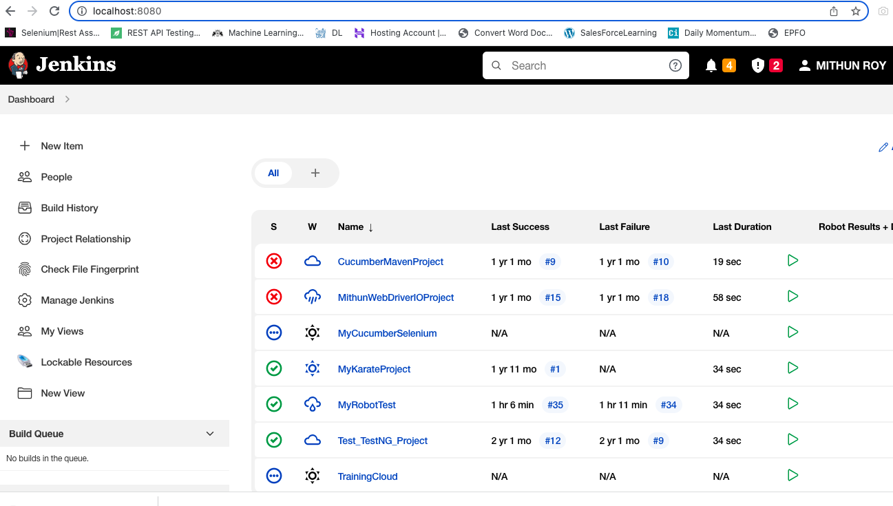
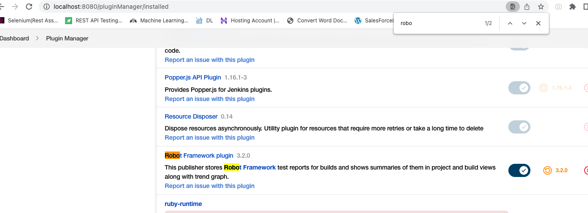
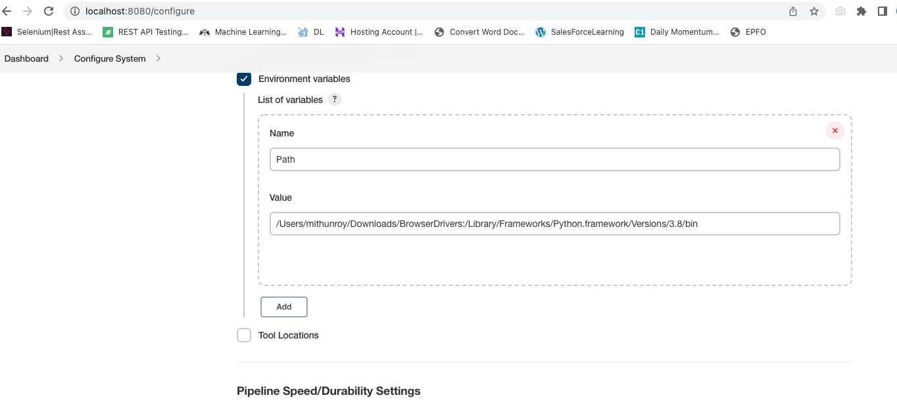
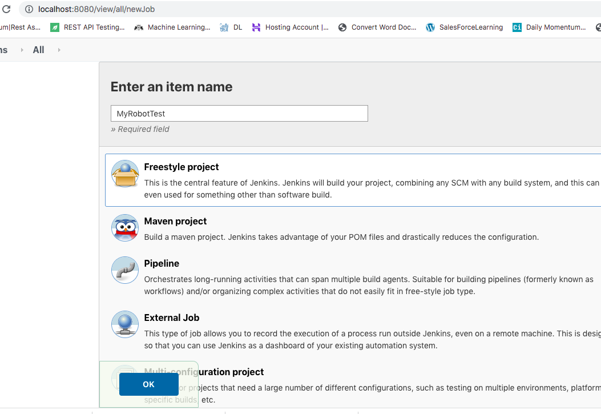
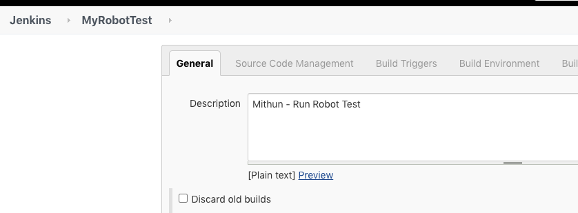
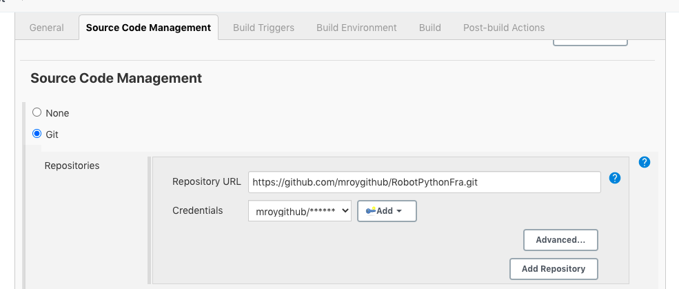
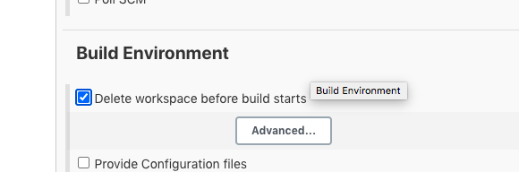
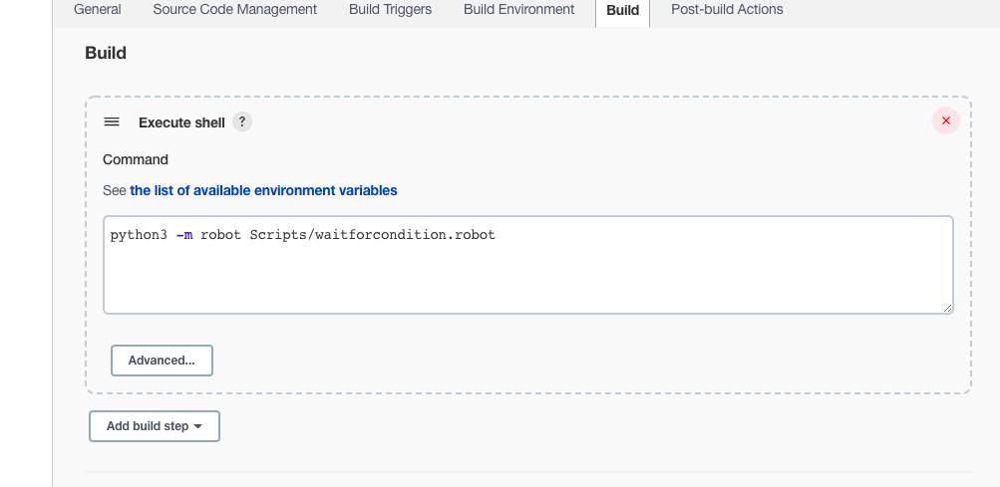
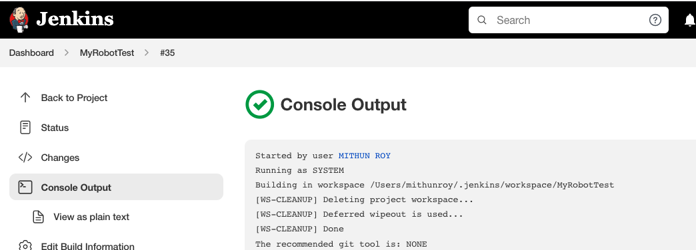
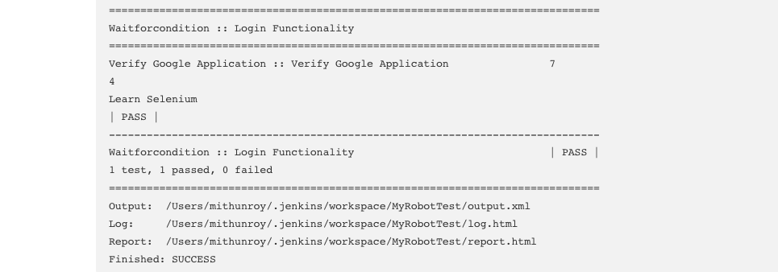

Create A Jenkins Project , Configure it through GIT and Run it
Step 1: Run Jenkins Server and open Jenkins in Chrome Browser with URL : localhost:8080

Step 2: Make sure your PYTHON_HOME path is set , capture this path to use it in Jenkins.
Step 3: Download ChromeDriver and keep it in a folder , capture this folder path to use it in Jenkins.
Step 4: Go to Manage Jenkins ==> Manage Plugins ==> Installed ==> Robot Framework, should be installed.

Step 5: Go to Manage Jenkins ==> Configure System ==> Environment Variables ==> Add Step 2 , Step 3 path separated by ':'

Step 6: Now Create a new jenkins project by clicking on + New Item
Step 7: Give any Project Name and click on Freestyle option ==> OK

Step 8: Give any Project Description

Step 9:Select GIT option , provide GIT URL and Credentials.

Step 10:Select CheckBox for Delete Workspace option under Build Environment

Step 11:Build ==> Execute Shell ==> Write command as ==> python3 -m robot Scripts/waitforcondition.robot

Step 12:Console Output is as below ... and it is Success..

